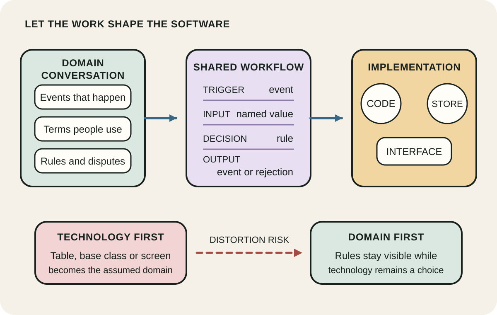
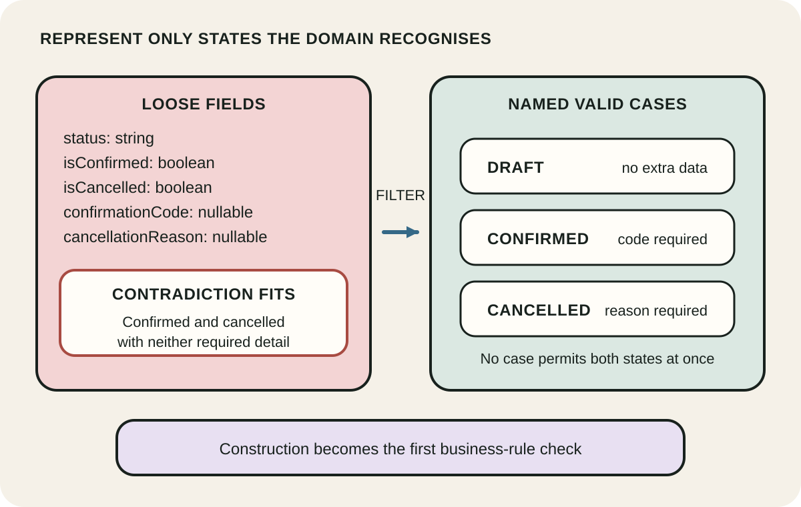
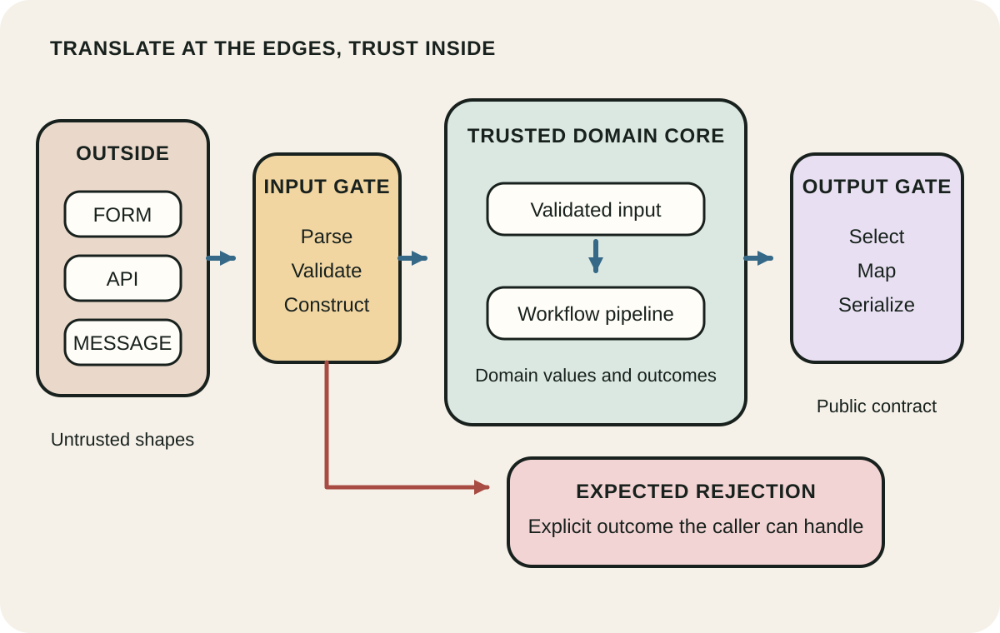

Daily lesson ·
Domain Modeling Made Functional
Let the business domain shape the code: discover workflows in shared language, encode valid states directly, and admit outside data through explicit trust boundaries.
Idea 1
Let the domain drive the first model #
The idea
Wlaschin begins with conversations about business events, workflows and the language used by domain experts. The early model records inputs, outputs, decisions and terms in a form that technical and nontechnical people can inspect together. The aim is a shared model of the work, not merely a shared vocabulary pasted onto an existing design.
He warns that starting from tables or class hierarchies can distort the domain before it is understood. A storage flag might collapse a quote and an order even when their rules differ; a convenient base class might introduce a concept that no domain expert recognises. Persistence and implementation still matter, but they follow a model of the business process rather than silently defining it.

Why it matters
A technically tidy model can still encode the wrong distinctions. Starting from observable work exposes disagreement early, keeps business rules visible and gives experts something they can challenge before implementation hardens assumptions.
Apply it today
Choose one current feature and write its trigger, primary input, successful output and one rejected outcome using the words stakeholders actually use.
Circle any term that a developer and stakeholder might define differently, then ask one precise question before naming a table, class or API.
Caveat or failure mode
A shared language does not guarantee shared understanding. Experts can disagree, use political language or describe policy as if it were natural law. Small CRUD areas may not justify elaborate modeling, and a model must evolve when evidence changes. Domain focus also does not remove accessibility, security, legal or operational constraints that sit outside one expert group's vocabulary.
Idea 2
Make invalid states hard to represent #
The idea
Wlaschin uses product types for values that exist together and choice types for alternatives. Instead of a record full of flags and nullable fields that permits contradictory combinations, the model names each legitimate case and gives that case only the data it needs. The compiler can then reject code that constructs a state outside those choices.
He also wraps primitive values behind constrained constructors, so a value enters the trusted model only after its relevant rule is checked. This makes types readable documentation and moves some tests from repeated runtime checks to the point of construction. Workflows can likewise expose transitions in their signatures, such as unvalidated input becoming validated input.

Why it matters
When invalid combinations are representable, every consumer must remember the same defensive checks. Encoding alternatives and constraints once reduces ambiguity, makes missing cases visible and turns the data model into an executable statement of the rule.
Apply it today
Choose one status field, pair of booleans or nullable field cluster and list every combination the current structure permits.
Cross out combinations the business rejects, then sketch named cases whose required data cannot create those combinations.
Caveat or failure mode
Types only enforce what the model expresses. They cannot prove that an address exists, a payment cleared or a stakeholder described the rule correctly. Cross-record, temporal and distributed invariants may still require transactions or runtime checks. Over-modeling every primitive can also bury simple work under conversion code, so apply constraints where failure has meaningful cost.
Idea 3
Put explicit gates around a trusted core #
The idea
Wlaschin separates serialization-friendly data transfer objects from the domain types inside a bounded context. Data arriving from JSON, a form, a queue or a database is untrusted. An input gate parses and validates it into a domain value; only then does the workflow treat the value as valid. An output gate deliberately converts domain results into a public contract and can omit private or irrelevant information.
Inside the boundary, small functions form a pipeline whose input and output types expose each step. Expected domain failures are modeled as part of the workflow, while programmer errors and infrastructure failures may need different handling. Keeping I/O and conversion at the edges protects the core model from serializer, storage and transport concerns.

Why it matters
Without a visible boundary, defensive checks spread through the code and infrastructure shapes the domain. Explicit gates centralise translation, prevent accidental trust and let the core stay testable without databases, queues or HTTP.
Apply it today
Take one endpoint or message handler and draw its path from raw input to the first trusted domain value, including the rejection path.
Name one transport concern currently inside the core and one conversion function that could move it back to the boundary.
Caveat or failure mode
A pure core does not make a distributed workflow atomic, available or secure. Boundary validation can become duplicated or inconsistent, and output contracts still create coupling that must be versioned deliberately. Wlaschin also cautions against forcing every I/O failure or programmer bug into a domain Result type; error handling should match the kind of failure and what the caller can do.
Knowledge check · 6 questions
Learning check
Answer all 6, then check your answers. Your first result stays in this browser, and each explanation appears after you check. A 3-question review can appear on the homepage from tomorrow.
6 questions not yet answered.
Today's experiment · 10 minutes
Expose one invalid state
- Minutes 0 to 2: choose one status string, boolean pair or nullable field cluster in a current feature.
- Minutes 2 to 4: list the combinations the structure permits and mark the ones the business rejects.
- Minutes 4 to 6: sketch named valid cases, attaching data only to the cases that require it.
- Minutes 6 to 8: write the boundary rule that converts raw input into one of those cases or a rejection.
- Minutes 8 to 10: try to express one rejected combination in the new sketch and record what prevents it.
Observable result: A before-and-after model showing at least one previously representable invalid state that the revised cases cannot express.
Retrieval practice
Spaced recall
- From Braiding Sweetgrass: before taking a technical shortcut, what would it mean to ask what the shared domain model needs to keep healthy?
- From How to Measure Anything: what observable defect or rework signal would test whether a stronger domain type improves this workflow?
- From Building Evolutionary Architectures: which lightweight fitness function could detect when an external DTO begins leaking into the trusted core?
Verification
Source notes
These links support the attributed claims and edition details; applications and extensions are labelled in the lesson.
- Pragmatic Bookshelf: Domain Modeling Made Functional edition, scope and contents
- Pragmatic Bookshelf extract: domain-first design and workflow documentation
- Pragmatic Bookshelf extract: modeling data and workflows with product and choice types
- Scott Wlaschin: domain modeling with the F# type system
- Scott Wlaschin: trust boundaries, validation gates and DTO contracts
- Scott Wlaschin: choosing explicit domain errors without modeling every failure as Result
One-sentence takeaway